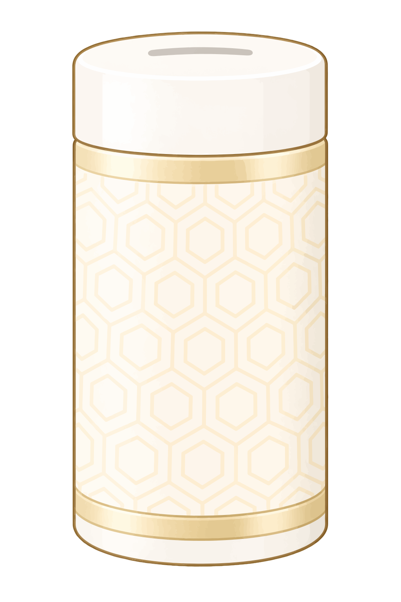

6ヶ月連続購入特典
6ヶ月連続購入の流れ
6Months NINA
6ヶ月続けると、プレゼントがもらえます
定期購入でサンテアージュ OX-288を6か月連続して購入すると、6Months NINAのプレゼント対象となります。
1ヶ月目

2ヶ月目
3ヶ月目
4ヶ月目
5ヶ月目
6ヶ月目プレゼント対象！
プレゼントの対象になる条件
OX-288を定期購入している
サンテアージュ OX-288 カプセルタイプまたはゼリータイプの定期購入が対象です。
6ヶ月連続して購入する
初回購入もカウントされます。
ポジションごとにカウント
連続購入のカウントは、ポジションごとに行われます。
連続購入のカウントがリセットされる場合
決済NG、振替不能、返品などにより商品を受け取れなかった場合は、連続購入のカウントがリセットされ、リカウントとなります。
また、サロン等での定期購入は6Months NINAの対象外です。
購入状況を確認したいとき
自分が何ヶ月目なのかわからない場合は、E-Serviceの購入履歴などを確認してください。
E-Serviceを確認するメンバーズマニュアル1P参照